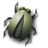

| Task Name | Bounty |
|---|---|
| Support export of tasks to CSV spreadsheet files | $300 |
| Bugzilla tasks backend | $500 |
Currently, Evolution does not have data export features for tasks. Task list data is not easy to import into spreadsheets or project management tools, and it should be.
The difficult part of this task will be altering the task storage format to include a task ID field, which will match the WBS or "work breakdown structure" code in a project management program. Once you have that, the export to a CSV file should be relatively simple.
Just evolution.Evolution and the GNOME project as a whole both use Bugzilla to track bugs. Since Evolution is used by many GNOME developers, it would be useful to have some degree of integration with Bugzilla. 
evolution-data-server and evolution
You will need to add a way to add a bugzilla server to your list of task sources. (The user will need to configure server name, username, and optionally have it remember his password.)
Evolution will have to parse the output of Bugzilla's "query.cgi" page, and extract the list of saved queries from the pop-up at the bottom. Each saved query should show up as a folder on that server in Evolution.
When the user opens the folder, Evolution will fetch the results of that query and show a task item for each bug. The summary of the task should be the summary of the bug, and the URL field of the task should be a link to the relevant bugzilla entry. If the user opens the bug, the "Description" field should show the rest of the information. The backend will probably need to be read-only.
There are various extensions you can make to the basic idea. For example, you could try to map bug priority to task priority, or have some indication of which tasks are assigned to the user.